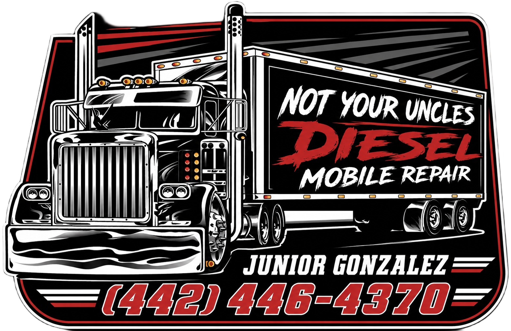

POWERTRAIN
ENGINE REPAIR
Engine diagnostics and repair for light- and heavy-duty applications. Full in-frame rebuilds are not currently offered.

NOT YOUR UNCLESMobile diesel repair for trucks, equipment and fleets. Diagnostics, electrical, engine repair, fabrication and more — we bring the capability to you.
From light-duty vehicles and diesel pickups to heavy-duty trucks, skid steers, forklifts and excavators. No shop visit required.
Engine diagnostics and repair for light- and heavy-duty applications. Full in-frame rebuilds are not currently offered.
Systematic fault finding for drivability, electrical and mechanical issues.
Electrical troubleshooting, starting, charging, wiring and component faults.
Mobile testing support for the equipment and vehicles you rely on.
Diesel opacity testing brought directly to your location.
Off-road equipment is part of the job. We service construction and industrial equipment alongside road vehicles.
Mobile welding and fabrication for repairs, reinforcement and practical field solutions.
Mobile service across the region. In-state service only.
CHECK SERVICE AVAILABILITY ↗Send the year, make, model/equipment type, your location and what’s going on.
TEXT SERVICE REQUEST ↗